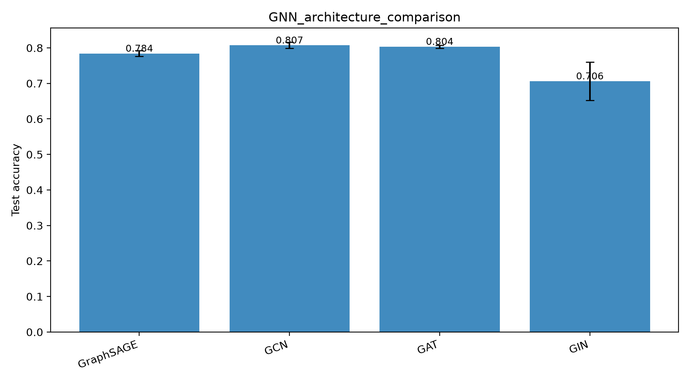
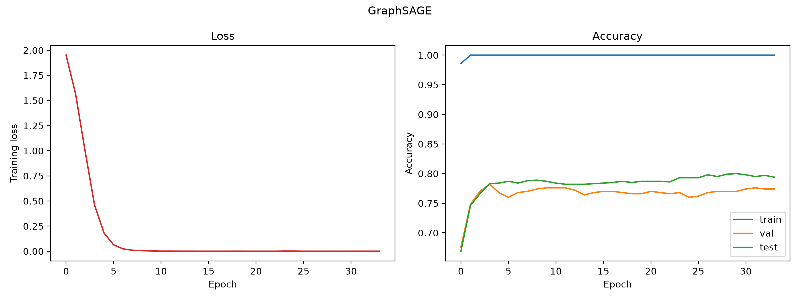
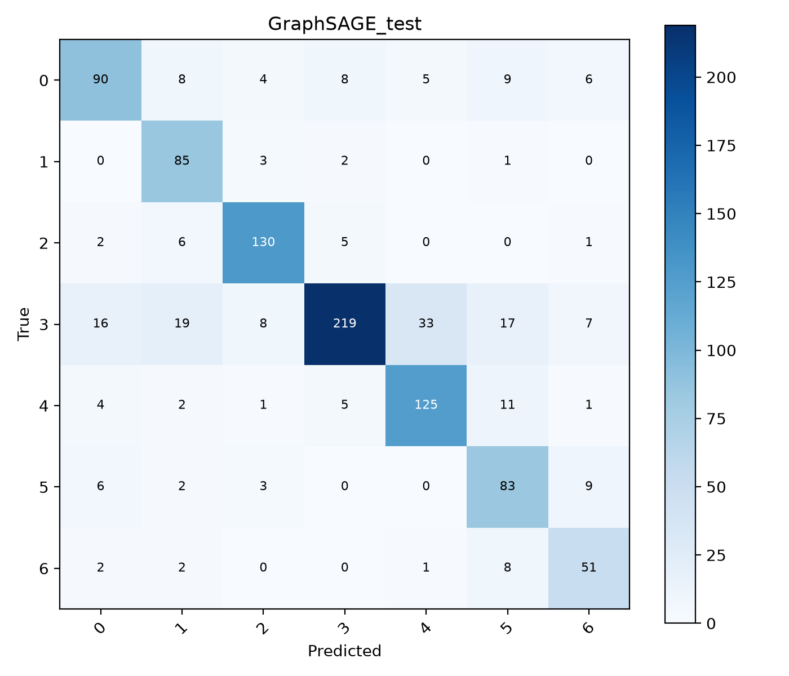
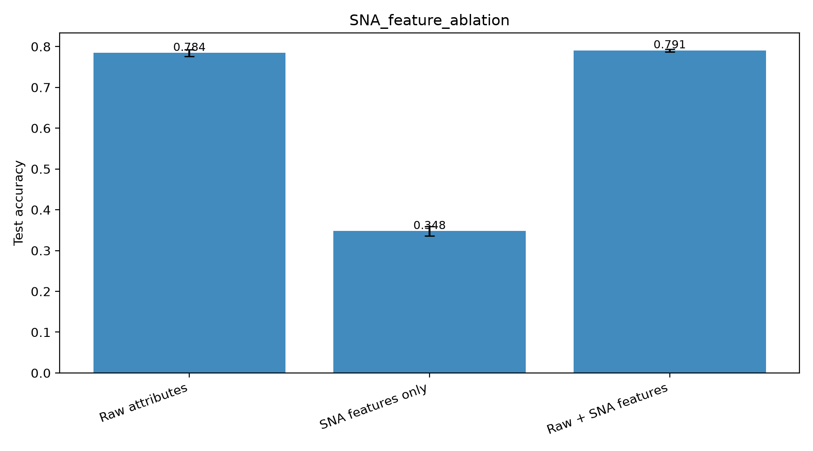
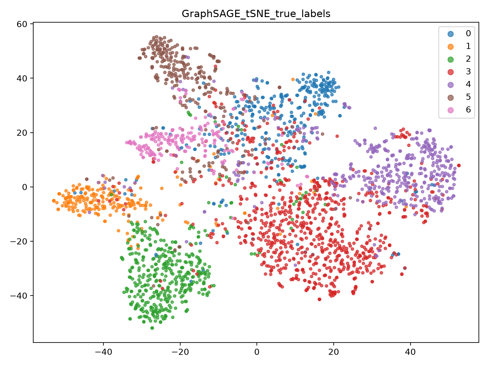
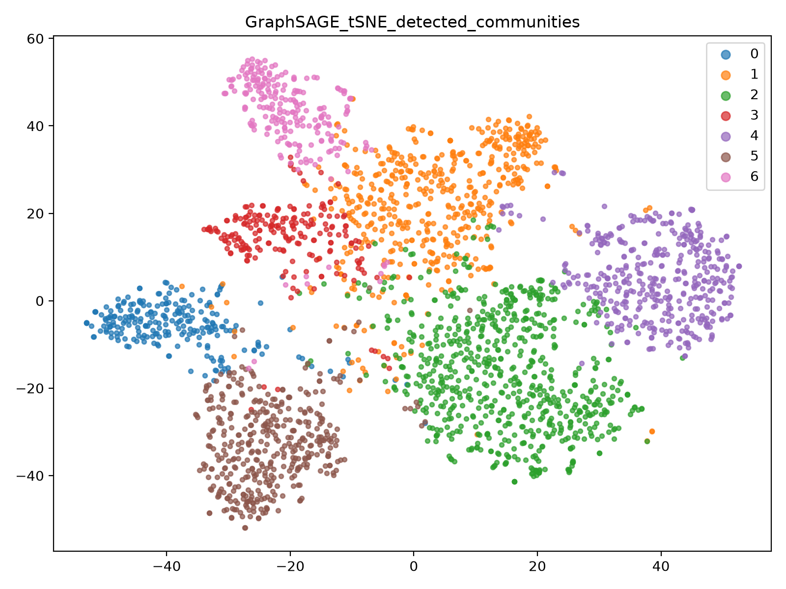

Abstract—Node classification in social networks is a core task of social network analysis (SNA). Prior work showed that GraphSAGE, an inductive graph neural network (GNN), outperforms traditional feature-only and structure-only classifiers on this task. This paper extends that line of work in four directions. First, we benchmark four GNN architectures (GraphSAGE, GCN, GAT, GIN) under a methodologically sound protocol with validation-based model selection, early stopping, and multi-seed reporting. Second, we inject eight classical SNA structural descriptors (PageRank, betweenness, k-core, clustering coefficient, among others) as node features and measure their contribution through an ablation study. Third, we implement the degree-adaptive neighbor-sampling rule Si = c + ⌊Ni·w⌋ and show it yields a +2.0 point gain over fixed fan-out sampling. Fourth, we evaluate the learned representations beyond classification, on link prediction (ROC-AUC 0.831) and unsupervised community detection, where clustering GraphSAGE embeddings (NMI 0.574) substantially outperforms both Louvain modularity maximization (NMI 0.448) and clustering on raw attributes (NMI 0.147). On the Cora citation network, attention-based aggregation is the strongest neighborhood operator (80.4% accuracy), combining raw attributes with structural features improves accuracy to 79.1% with reduced variance, and accuracy saturates at three message-passing layers, confirming that distant nodes contribute little signal.
Keywords—graph neural networks; GraphSAGE; social network analysis; node classification; link prediction; community detection
Social networks structure much of modern online life, and analyzing them—classifying users, predicting relationships, discovering communities—has direct applications in advertising, content moderation, and public-opinion monitoring. Classical approaches split into two families: feature-based classifiers that ignore the graph (e.g., logistic regression on user attributes) and structure-based embedding methods that ignore attributes (e.g., DeepWalk [6]). Graph neural networks unify the two by propagating attribute information along edges, and Xiao et al. [1] demonstrated on Weibo data that GraphSAGE [2] outperforms both families for social network node classification.
This paper builds on [1] and deepens it along four axes. (i) Breadth of models: we compare GraphSAGE against GCN [3], GAT [4], and GIN [5] under a single training protocol, and extend the aggregator study of [1] (mean/pool/LSTM) with learned attention. (ii) Explicit structural signal: GNN message passing captures local structure implicitly; we test whether classical SNA descriptors—centralities, clustering, coreness—carry complementary signal when concatenated to raw attributes. (iii) Adaptive sampling: we implement the degree-proportional sampling rule proposed in [1] and quantify its effect. (iv) Beyond classification: we evaluate the same encoder on link prediction and unsupervised community detection, two canonical SNA tasks absent from [1].
We additionally correct a common methodological weakness: reporting the best test accuracy observed during training, which implicitly tunes on the test set. All results here select the model at the best validation epoch and report test metrics as mean ± standard deviation over three random seeds.
Experiments use the Cora citation network [8], a standard public benchmark whose structure mirrors a social graph: 2,708 nodes (documents/users), 5,278 undirected edges (links), 1,433-dimensional binary bag-of-words node attributes, and 7 classes. We use the standard Planetoid split: 140 training, 500 validation, and 1,000 test nodes. Given G = (V, E, X) with labels on a small subset of V, the tasks are: (a) predict the labels of unlabeled nodes; (b) predict held-out edges; (c) recover the latent community structure without labels.
All models follow the message-passing template: at layer k, each node aggregates its (sampled) neighborhood and combines the result with its own state,
hkN(v) = AGGk({hk−1u, ∀u ∈ N(v)}) (1)
hkv = σ(Wk · CONCAT(hk−1v, hkN(v))) (2)
which is GraphSAGE [2]; we evaluate mean, max-pool, and sum instantiations of AGG. GCN [3] replaces (1)–(2) with a symmetric-normalized sum over the closed neighborhood. GAT [4] learns the aggregation weights via attention,
αuv = softmaxu∈N(v)(LeakyReLU(aT[Whv ‖ Whu])) (3)
with 8 attention heads. GIN [5], the provably most expressive architecture in this family, uses
hkv = MLPk((1+εk)·hk−1v + Σu∈N(v) hk−1u). (4)
Unless stated otherwise all models use 2 layers, 128 hidden units, dropout 0.5, Adam with learning rate 0.01 and weight decay 5·10−4, at most 300 epochs with early stopping (patience 30) on validation accuracy.
We compute eight classical descriptors per node: degree, log-degree, local clustering coefficient, PageRank, approximate betweenness centrality (128 pivots), eigenvector centrality, k-core number, and average neighbor degree. Each is z-score standardized and concatenated to the raw attribute vector, growing it from 1,433 to 1,441 dimensions. The ablation compares raw attributes only, structural features only, and their concatenation.
GraphSAGE samples a fixed number of neighbors per layer. Reference [1] proposed making the sample size proportional to a node's degree Ni,
Si = min(Smax, c + ⌊Ni · w⌋), (5)
so that hubs contribute proportionally more neighbors. Their Weibo graph contains hubs with millions of followers (w = 0.001); citation-graph degrees are small (mean 3.9), so we rescale to c = 5, w = 0.5, Smax = 25. Training is mini-batch: 64 seed nodes per step, two-hop layered sampling, loss computed on seeds only.
A 2-layer GraphSAGE encoder produces embeddings z from training edges only; a candidate edge (u, v) is scored by the dot-product decoder p(u,v) = σ(zuTzv). Edges are split 85/5/10 (train/val/test) with 1:1 negatives. Critically, training negatives are re-sampled every epoch: with a fixed negative set the encoder memorizes it and test ROC-AUC degrades from 0.831 to 0.730.
We compare three unsupervised approaches against the ground-truth classes using normalized mutual information (NMI) and adjusted Rand index (ARI): Louvain modularity maximization [7] on the bare graph (structure only), K-means on raw attributes (content only), and K-means (k = 7) on trained GraphSAGE embeddings (structure + content).
Table I confirms the central claim of [1] with a wider model set: methods that fuse attributes and structure dominate. Logistic regression (attributes only) reaches 57.6% and DeepWalk (structure only) 69.6%, while every GNN except GIN exceeds 78%. GCN is strongest (80.7%), with GAT statistically indistinguishable (80.4%). GIN's sum aggregation without normalization is less suited to this attribute distribution and exhibits 6× higher variance. Fig. 1 shows the comparison; Fig. 2 shows training behavior and the test confusion matrix of the GraphSAGE reference model.
| Model | Accuracy | Macro-F1 |
|---|---|---|
| Logistic Regression (attributes) | 0.576 | — |
| DeepWalk + LR (structure) | 0.696 | — |
| GIN | 0.706 ± 0.054 | 0.682 ± 0.084 |
| GraphSAGE | 0.784 ± 0.008 | 0.777 ± 0.005 |
| GAT | 0.804 ± 0.004 | 0.798 ± 0.006 |
| GCN | 0.807 ± 0.008 | 0.800 ± 0.006 |



Reference [1] compared mean, pooling, and LSTM aggregators. Table II repeats this study with the aggregators available in our framework plus learned attention. Fixed aggregators cluster between 76–78%, while attention reaches 80.4% with the lowest variance—the neighborhood weighting itself is worth learning, a natural upgrade of the paper's fixed-function comparison.
| Aggregator | Accuracy |
|---|---|
| SAGE max (pool) | 0.764 ± 0.020 |
| SAGE sum | 0.770 ± 0.010 |
| SAGE mean | 0.784 ± 0.008 |
| Attention (GAT, 8 heads) | 0.804 ± 0.004 |
Table III isolates the value of explicit SNA descriptors. Alone, eight structural dimensions reach 34.8%—half of what 1,433 attribute dimensions achieve, a remarkable density of signal. Concatenated with raw attributes they add +0.7 points and reduce seed variance by 2.4×, indicating that centrality and coreness encode positional information the bag-of-words attributes lack and that two message-passing hops do not fully recover.
| Node features | Dim. | Accuracy |
|---|---|---|
| SNA structural only | 8 | 0.348 ± 0.011 |
| Raw attributes | 1433 | 0.784 ± 0.008 |
| Raw + SNA | 1441 | 0.791 ± 0.003 |

Table IV varies the number of message-passing layers K. Accuracy rises steeply from one to three hops and saturates thereafter (3 layers: 80.6%; 4 layers: 80.4%), consistent with the observation in [1] that distant users have little influence on the current user, and with the oversmoothing literature. Table V varies the fraction of training labels: the model degrades gracefully to 40% of labels (73.4%) but collapses at 5% (7 labels, roughly one per class).
| K | 1 | 2 | 3 | 4 |
|---|---|---|---|---|
| Acc. | 0.702 | 0.784 | 0.806 | 0.804 |
| ± std | 0.002 | 0.008 | 0.002 | 0.006 |
| Labels | 5% | 10% | 20% | 40% | 100% |
|---|---|---|---|---|---|
| Acc. | 0.134 | 0.597 | 0.622 | 0.734 | 0.813 |
Table VI compares two-hop mini-batch training with fixed fan-out [10, 10] against the adaptive rule (5). Adaptive sampling gains +2.0 points (81.9% vs. 79.9%)—a substantially larger margin than the +0.26 reported on Weibo in [1], suggesting the rule is more valuable when the fan-out budget is small relative to hub degrees.
| Strategy | Accuracy |
|---|---|
| Fixed fan-out [10, 10] | 0.799 |
| Adaptive Si = 5 + ⌊0.5·Ni⌋, cap 25 | 0.819 |
The GraphSAGE encoder with dot-product decoding attains test ROC-AUC 0.831 and average precision 0.835 on held-out edges (Table VII). Re-sampling negatives each epoch is essential: with a fixed negative set, validation AUC peaks around epoch 50 and then decays, leaving test AUC at only 0.730.
| Training negatives | ROC-AUC | Avg. Precision |
|---|---|---|
| Fixed set | 0.730 | 0.688 |
| Re-sampled per epoch | 0.831 | 0.835 |
Table VIII scores three unsupervised methods against the ground-truth classes. Louvain, using structure alone, finds 102 fine-grained communities (NMI 0.448 but ARI only 0.262 due to over-partitioning). K-means on raw attributes performs poorly (NMI 0.147). K-means on GraphSAGE embeddings—which fuse both sources—clearly dominates (NMI 0.574, ARI 0.559). Fig. 4 visualizes the embedding space: detected communities align closely with true classes.
| Method | NMI | ARI |
|---|---|---|
| K-means, raw attributes | 0.147 | 0.068 |
| Louvain (102 communities) | 0.448 | 0.262 |
| K-means, GraphSAGE embeddings | 0.574 | 0.559 |


We extended GraphSAGE-based social network analysis into a broader, methodologically rigorous framework. Four findings stand out. First, the advantage of GNNs over feature-only and structure-only baselines (+11 to +23 points) is robust across four architectures, and learned attention is the best neighborhood aggregator. Second, classical SNA descriptors—cheap to compute and only eight-dimensional—still add measurable accuracy and stability on top of a GNN, showing that explicit positional signal complements learned message passing. Third, the degree-adaptive sampling rule of prior work generalizes beyond its original setting and yields a +2.0 point gain under small fan-out budgets. Fourth, a single supervised encoder transfers to link prediction (AUC 0.831) and to community detection, where clustering its embeddings beats dedicated structure-only algorithms by a wide margin. Future work includes jumping-knowledge connections to push past the three-layer saturation point, evaluation on larger heterogeneous social graphs, and self-supervised pre-training of the encoder.